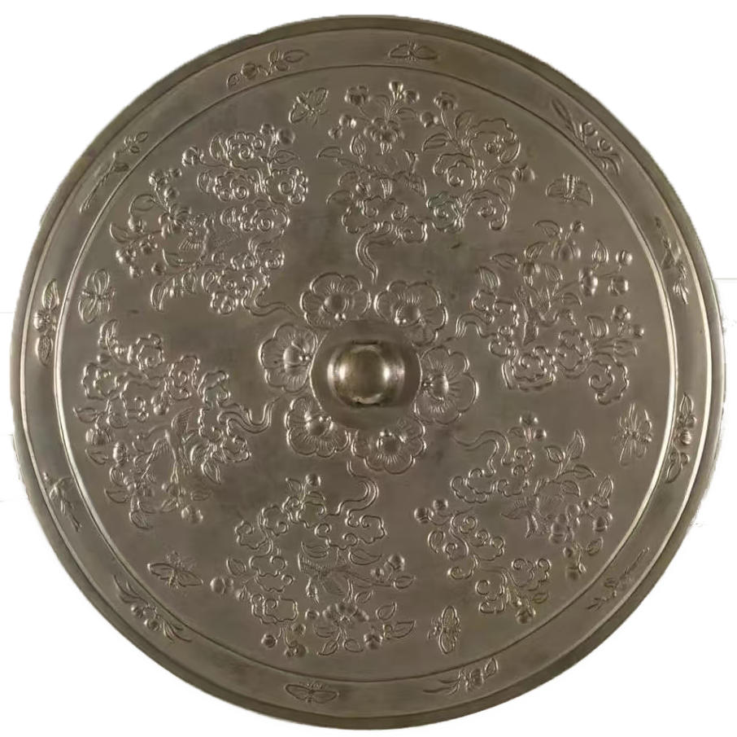
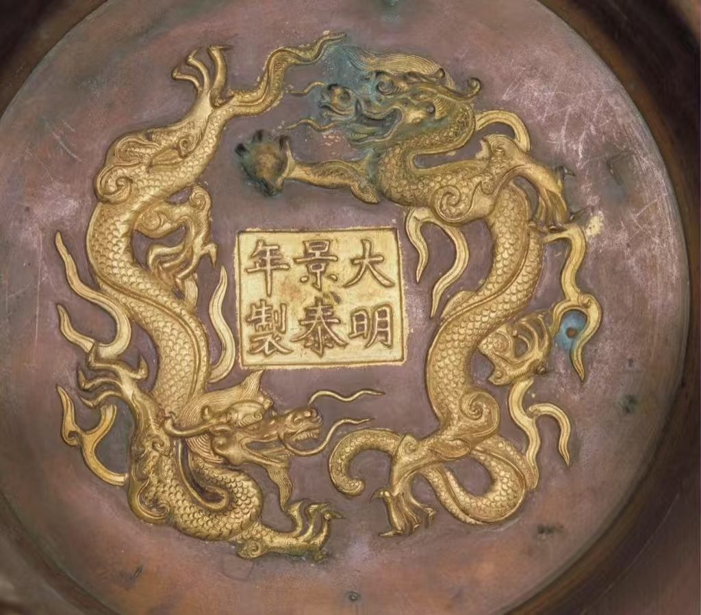

中国掐丝珐琅传承网
中国掐丝珐琅传承网
00
-
00
-
00
中国掐丝珐琅传承网
唐代起源论的论据是日本正仓院南仓所藏的黄金琉璃钿背十二棱镜，这面镜子被诸多学者认为是现存最早的中国掐丝珐琅制品。该镜背面由十二瓣莲瓣组成，以金丝掐制莲瓣轮廓与内里装饰纹饰，并填以红、绿、蓝等色釉。虽然此镜的装饰风格和釉料色泽与同时代的唐三彩器横向比较具有相似之处，但其制作时间、地点等问题尚未有定论，同时代未有相关文献或掐丝珐琅器佐证唐代起源论，属于孤例。故而唐代起源论在学术界仍然存疑。
宋代起源论的论据见于文献记载。南宋顾文荐的《负暄杂录》中记载：“予得一瓶，以铜为胚胎，傅之以革，外为觚棱，彩绘外国人之奇形诡状，却似琉璃，极其工巧，不知何物，闻是蒯宾国物，更当质于博识者。”其中“以铜为胚胎”“却似琉璃”等特征的描述与掐丝珐琅工艺的特点极为相似，所以文章记述的有可能就是以掐丝珐琅工艺制作的瓶。除了该文献对掐丝珐琅有相关记载，宋代起源论与唐代起源论存在同样问题——未有同时期的相关文献或实物佐证，甚至从宋代至元代的一段时间里，掐丝珐琅在中国历史相关记载中都是空白。“不知何物，闻是蒯宾国物”中的“蒯宾国”是对西域古国的称呼。因此，根据这段文字资料可以推测，掐丝珐琅工艺品或许随着当时的商贸活动进入中国，但这门技术在中国从宋代起源的说法还有待考证。
元代起源论的论据相对丰富，主要论据是元末明初曹昭的《格古要论》与几件改款的元代掐丝珐琅器。明洪武二十一年(1388)出版的《格古要论》是中国目前存世年代最早的文物鉴定专著,虽然此书成书时间为明代早期,但编著此书的时间应该是元明更替之际,鉴赏的古玩也多参考元代的器物。此书下卷“古窑器”篇章记载,“大食窑出大食国,以铜作身,用药烧成五色花者,与佛朗嵌相似。尝见香炉、花瓶、盒儿、盏子之类,但可妇人闺阁之中用,非士大夫文房清玩。世又谓之鬼国窑。”“大食”是我国唐代以后对阿拉伯帝国的称谓，这段记载对掐丝珐琅器的外观与特征有详细描述。王佐于明景泰年间开始增补曹昭的《格古要论》，称《新增格古要论》。他在“又谓之鬼国窑”后又增补了一句“今云南人在京多作酒盏，俗呼曰‘鬼国嵌’，内府作者，细润可爱”。“内府”即皇宫内负责监管制造器具的部门，由此可见，掐丝珐琅在发展中
逐渐被主流认可。除了文献记载，还有故宫博物院考证的六件元代掐丝珐琅器作为实物佐证。明
清时期，掐丝珐琅器有改款、加款之风。如，掐丝珐琅缠枝莲纹兽耳三环尊底下虽刻“大明景泰
年制”，但仔细辨别此尊的部件可发现腹部、颈部及底足处釉色有明显区别，腹部与元代青花罐
典型器的造型形似，故此尊是在元代珐琅罐基础上改款而成，其余上下部分均为明代改制。丰富
的论据使元代起源论成为学术界主流的观点。

明代起源论的论点是对元代起源论论据的质疑。部分学者认为，《新增格古要论》中《古窑器论》在提及哥窑、吉州窑等处时，都说明了“元朝”这一具体时间点，而大食窑部分却并未提及“元朝”，文中的“今”应该是指著书时的明代。在考定的几件元代珐琅器的制式是元代还是明代时同样也有争议，祝重寿在《关于中国铜胎掐丝珐琅（景泰蓝）的起源问题》一文中分析故宫博物院考定的元代珐琅器的器型与装饰纹饰，认为这几件珐琅器缺乏元代特征，反而具有明代特征。故而对于中国掐丝珐琅工艺起源的论争至今尚未定论。